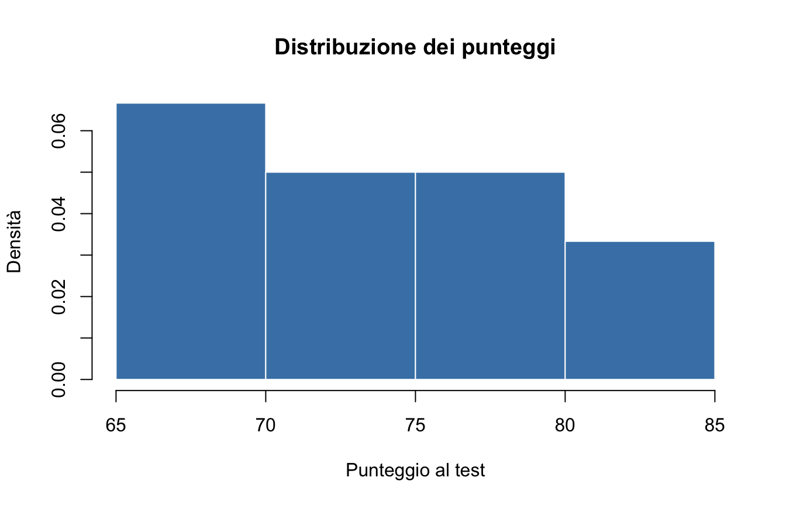
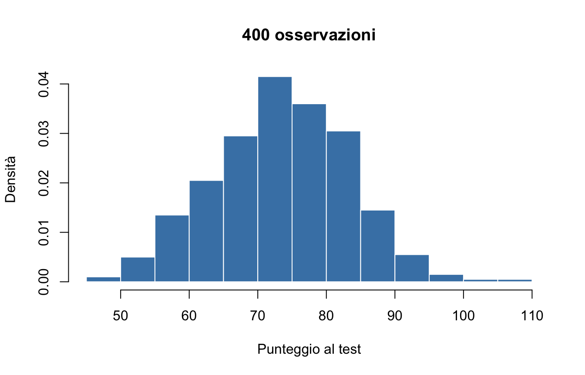
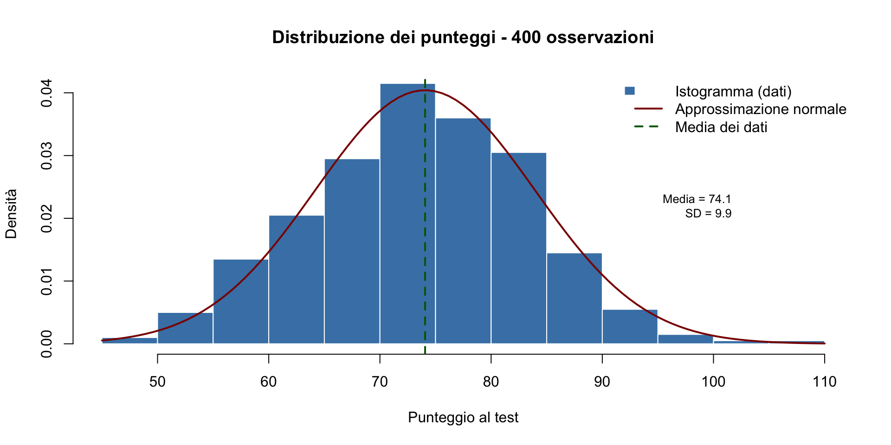

Primi passi con R
Dall’intuizione ai dati: esplorare prima di concludere
![]()
29 ottobre 2026
Dove siamo nel percorso
Il filo conduttore
Lezione 1: Perché serve cambiare — la crisi della replicabilità riguarda la vostra pratica professionale.
Lezione 2: Come siamo arrivati qui — i limiti strutturali dell’approccio tradizionale, le soluzioni possibili (Open Science + Bayes).
Oggi: Iniziamo a costruire le competenze pratiche. Non per “fare calcoli”, ma per imparare a guardare i dati nel modo giusto.
La domanda epistemologica di oggi
Nelle prime due lezioni abbiamo parlato di:
- valori-\(p\) che ingannano,
- risultati che non si replicano,
- garden of forking paths,
- conclusioni premature.
La domanda: come si evitano questi errori prima ancora di fare inferenza?
La risposta: imparando a esplorare i dati in modo sistematico e trasparente.
Esplorare non è “giocare con i numeri”
L’analisi esplorativa dei dati (EDA) non è un passaggio facoltativo prima dell’analisi “seria”.
È il fondamento di qualunque analisi rigorosa:
- rivela pattern inattesi,
- identifica problemi nei dati,
- suggerisce ipotesi da testare,
- previene conclusioni basate su artefatti.
John Tukey
Come ha scritto John Tukey (1977):
“È meglio una risposta approssimativa alla domanda giusta che una risposta esatta alla domanda sbagliata.”
Il paradosso dell’inferenza senza esplorazione
Molti degli studi che non si sono replicati avevano questo problema:
- i ricercatori raccoglievano i dati;
- applicavano immediatamente un test statistico;
- ottenevano \(p < .05\);
- pubblicavano il risultato.
Ma non avevano mai guardato davvero i dati.
- Non avevano visto gli outlier che distorcevano la media.
- Non avevano notato la distribuzione non-normale che rendeva inappropriato il test.
- Non avevano esplorato le assunzioni del modello.
L’approccio che costruiremo
In questo corso imparerete un workflow diverso:
- importare i dati in modo riproducibile;
- esplorare la distribuzione (istogrammi, riassunti numerici);
- visualizzare pattern e anomalie;
- documentare ogni scelta analitica;
- solo poi fare inferenza — con piena consapevolezza di cosa c’è nei dati.
Questa è l’Open Science applicata: ogni passaggio è trasparente, verificabile e riproducibile.
Parte I: Istogrammi e densità
Ricapitoliamo: l’istogramma
Nella prima parte della lezione abbiamo visto l’istogramma: come rappresentare graficamente la distribuzione di un insieme di dati.
Ma perché l’istogramma è così importante per la nostra prospettiva epistemologica?
- Perché mostra la distribuzione empirica dei dati — non una statistica riassuntiva che nasconde informazioni.
- Perché rivela visivamente pattern che i numeri da soli non mostrano.
- Perché ci costringe a confrontarci con la variabilità intrinseca dei fenomeni psicologici.
Un istogramma vale più di mille valori-\(p\)
Considerate questi due scenari:
Studio A
\(n = 30\)
\(\bar{x} = 75\)
\(\text{valore-}p = .04\)
Studio B
\(n = 30\)
\(\bar{x} = 75\)
\(\text{valore-}p = .04\)
Stessa media, stesso valore-\(p\). Cosa potrebbe essere diverso?
Tutto.
La distribuzione potrebbe essere:
- simmetrica vs asimmetrica;
- unimodale vs bimodale;
- con o senza outlier;
- normale vs non-normale.
Il problema dell’Anscombe’s Quartet
Nel 1973, Francis Anscombe dimostrò che quattro dataset con identiche statistiche descrittive potevano avere distribuzioni completamente diverse.
Questo vale anche per i nostri dati psicologici:
- due gruppi con la stessa media possono avere distribuzioni completamente diverse;
- un test t può dare \(p < .05\) per ragioni molto diverse;
- senza guardare i dati, non sappiamo cosa stiamo realmente testando.
Ecco perché esplorare è epistemologicamente fondamentale.
Parte II: portare i dati dentro R
Il problema: da dove vengono i dati?
Nella ricerca psicologica, i dati raramente vengono digitati uno a uno nella console.
Arrivano da:
- questionari online (Google Forms, Qualtrics, …);
- software per esperimenti (PsychoPy, Gorilla, …);
- database clinici o scolastici.
Il formato più comune è il file CSV: un file di testo in cui ogni riga è un soggetto e le colonne sono separate da virgole.
Che cos’è un file CSV?
CSV = Comma-Separated Values (valori separati da virgole).
Un file CSV è un file di solo testo. Aprendolo con un editor di testo vedremmo qualcosa come:
id,eta,genere,punteggio
1,21,F,74
2,23,M,68
3,20,F,81
4,22,M,72
5,21,F,79La prima riga contiene i nomi delle variabili (colonne).
Ogni riga successiva è un’osservazione (un soggetto).
Perché CSV? La riproducibilità
I file CSV sono il formato gold standard per condividere dati perché sono:
- open: leggibili con qualunque software (R, Python, Excel, …);
- semplici: testo puro, nessun formato proprietario;
- trasparenti: apribili con un editor di testo per verificare cosa contengono;
- riproducibili: garantiscono che chiunque possa leggere i dati esattamente come li avete salvati.
Questo è l’Open Science in pratica: i vostri dati saranno verificabili da chiunque.
Creiamo un file CSV di esempio
Per questa lezione, creiamo noi stessi un piccolo dataset — così sappiamo esattamente cosa contiene.
Questo è un ipotetico campione di 12 studenti, con età, genere e punteggio a un test.
Salvare il file CSV
Ora salviamo il data.frame come file CSV:
write.csv() scrive il contenuto del data.frame in un file di testo con estensione .csv.
Il parametro row.names = FALSE evita di aggiungere una colonna con i numeri di riga (che non ci serve).
Importare il file CSV in R
Adesso facciamo l’operazione inversa — quella che farete nella pratica:
read.csv() legge il file CSV e lo trasforma in un data.frame di R.
Abbiamo dato il nome d a questo oggetto — un nome breve, comodo da scrivere.
Riproducibilità: chiunque abbia il file esempio_dati.csv può eseguire questa riga e ottenere esattamente gli stessi dati che stiamo usando noi.
Che cos’è un data.frame?
Come abbiamo già visto, un data.frame è il modo in cui R organizza una tabella di dati:
- ogni colonna è una variabile;
- ogni riga è un’osservazione;
- le colonne possono contenere tipi diversi (numeri, testo, …).
È l’oggetto fondamentale per l’analisi dei dati in R.
Corrisponde esattamente alla struttura concettuale che usiamo in psicologia:
- righe = partecipanti;
- colonne = variabili misurate.
Guardare i dati: head()
La prima cosa da fare con dati nuovi è guardarli:
id eta genere punteggio
1 1 21 F 74
2 2 23 M 68
3 3 20 F 81
4 4 22 M 72
5 5 21 F 79
6 6 24 M 65head() mostra le prime 6 righe. È utile per avere un’idea di cosa c’è nel dataset, senza stampare tutto.
Principio epistemologico: non dare mai per scontato che i dati siano come te li aspetti. Guardali sempre.
Quante righe? Quante colonne?
Sapere quante osservazioni avete è fondamentale — ricordate la lezione sulla crisi della replicabilità: campioni piccoli producono risultati instabili.
Nomi delle variabili
Ci dice come si chiamano le colonne. Queste sono le variabili del nostro dataset.
Trasparenza: dare nomi chiari e informativi alle variabili è parte della buona pratica scientifica. Chi leggerà i vostri script deve capire immediatamente cosa rappresenta punteggio, non var3 o x.
Accedere a una singola variabile: $
Per estrarre una colonna dal data.frame, usiamo il simbolo $:
Il risultato è un vettore — lo stesso tipo di oggetto che abbiamo visto nella lezione sull’istogramma.
Primi riassunti numerici
R ha funzioni pronte per calcolare le statistiche più comuni:
Nella prossima parte della lezione vedremo cosa significano questi numeri e perché non bastano da soli a descrivere i dati.
Un riassunto automatico: summary()
id eta genere punteggio
Min. : 1.00 Min. :19.00 Length :12 Min. :65.00
1st Qu.: 3.75 1st Qu.:20.75 N.unique : 2 1st Qu.:69.50
Median : 6.50 Median :21.50 N.blank : 0 Median :73.00
Mean : 6.50 Mean :21.50 Min.nchar: 1 Mean :74.00
3rd Qu.: 9.25 3rd Qu.:22.25 Max.nchar: 1 3rd Qu.:79.25
Max. :12.00 Max. :24.00 Max. :85.00 summary() produce un riassunto diverso per ciascuna colonna:
- per le variabili numeriche: minimo, massimo, media, mediana, quartili;
- per le variabili di testo: conteggi per categoria.
È un ottimo primo passo nell’esplorazione — ma ricordate: i numeri da soli non bastano.
L’istogramma sui dati importati
Adesso possiamo collegare i due argomenti di oggi — usiamo hist() (che abbiamo imparato nella prima parte) sui dati importati:

Cosa ci dice l’istogramma che i numeri nascondono
Con 12 osservazioni, l’istogramma è ancora “grezzo”, ma già rivela qualcosa:
- la distribuzione dei dati è leggermente asimmetrica;
- nessun outlier estremo visibile;
- la distribuzione sembra unimodale.
Domanda critica: se avessimo solo la media (74.2) e la deviazione standard (6.3), avremmo saputo tutto questo?
No. Ecco perché esplorare visivamente è epistemologicamente essenziale.
Leggere i dati da un URL
Spesso i dati non sono sul nostro computer, ma su un sito web. R può leggere direttamente da un indirizzo web:
Basta passare l’indirizzo (URL) al posto del nome del file. Questo è utile per i dataset condivisi, come quelli che troverete su ccaudek.github.io/utet-eda/.
Open Science: condividere i dati via URL permette a chiunque di replicare le vostre analisi con una sola riga di codice.
Un esempio più realistico
Carichiamo un dataset più grande, sempre simulato, per vedere come si comporta R con più dati:
Non preoccupatevi della funzione rnorm() per ora — genera numeri casuali. La riprenderemo quando parleremo di simulazioni.
Come cambiano le cose con più dati
Confrontate con i 12 dati di prima: la media è simile (75 vs 74.2), ma ora abbiamo 400 osservazioni — molto più vicine a un campione rappresentativo in psicologia.

L’effetto della numerosità campionaria
Con 400 osservazioni l’istogramma è più “liscio” — si avvicina di più a quella curva di densità di cui abbiamo parlato in precedenza.
Lezione epistemologica: con campioni piccoli (n = 12), la forma della distribuzione è incerta. Con campioni grandi (n = 400), possiamo vedere meglio il pattern sottostante.
Ricordate la crisi della replicabilità? Molti studi che non si sono replicati avevano \(n < 30\) — campioni troppo piccoli per distinguere un pattern reale dal rumore.

La distribuzione normale come modello
La curva rossa rappresenta una distribuzione normale con la stessa media e deviazione standard dei dati.
Non stiamo assumendo che i dati siano normali. Stiamo verificando visivamente quanto si avvicinano a questo modello.
Questo è un esempio di pensiero bayesiano (che svilupperemo più avanti):
- abbiamo un modello teorico (la normale);
- lo confrontiamo con i dati empirici;
- valutiamo quanto il modello si adatta.
Il flusso di lavoro minimo
Ricapitoliamo i passi essenziali per lavorare con i dati in R:
- Importare:
d <- read.csv("file.csv")
- Esplorare:
head(d),dim(d),names(d),summary(d)
- Estrarre una variabile:
d$nome_variabile
- Calcolare:
mean(),median(),sd(), …
- Visualizzare:
hist(d$variabile, freq = FALSE)
Questo workflow è riproducibile:
chiunque abbia i vostri dati e script può ripetere ogni passaggio.
Errori comuni (e come evitarli)
R distingue tra maiuscole e minuscole. punteggio e Punteggio sono due nomi diversi.
Se non sapete come si chiama esattamente una variabile, usate names(d) per controllare.
Lezione pratica: gli errori di sintassi capitano a tutti. L’importante è leggerli e capirli — R vi sta dicendo cosa è andato storto.
Un altro errore frequente
Le variabili “vivono” dentro il data.frame. Per accedervi bisogna usare d$genere, non solo genere.
Perché questa sintassi? Perché potreste avere più dataset aperti contemporaneamente, ciascuno con una variabile chiamata genere. La sintassi d$genere dice a R esattamente quale genere volete.
Collegamento con gli obiettivi epistemologici
Cosa abbiamo imparato oggi (e perché conta)
Oggi abbiamo imparato le competenze tecniche di base:
- importare CSV;
- esplorare dataframe;
- calcolare statistiche descrittive;
- creare istogrammi.
Ma l’obiettivo epistemologico era più profondo:
Guardare i dati prima di fare inferenza è un atto di rigore scientifico, non un passaggio facoltativo.
Il legame con la crisi della replicabilità
Molti studi che non si sono replicati avevano questo in comune:
- Campioni piccoli (\(n < 30\)) → alta variabilità campionaria.
- Nessuna visualizzazione dei dati → pattern nascosti.
- Analisi diretta senza esplorazione → assunzioni non verificate.
- Flessibilità analitica non documentata → garden of forking paths.
Il workflow che stiamo costruendo previene tutti questi problemi.
L’esplorazione come documentazione trasparente
Quando condividete un’analisi, l’esplorazione documentata mostra:
- quali dati avete effettivamente raccolto;
- quali pattern avete osservato;
- quali decisioni analitiche avete preso (e perché);
- quali assunzioni avete verificato.
Questo è Open Science: non solo condividere i dati, ma rendere trasparente come li avete analizzati.
Verso la prossima lezione
Oggi abbiamo imparato a importare e visualizzare i dati.
Nella prossima parte della lezione:
- vedremo in dettaglio cosa significano media, mediana, varianza;
- capiremo perché questi riassunti numerici possono ingannare;
- impareremo a interpretare la variabilità — non come rumore da eliminare, ma come informazione da capire.
E sempre con lo stesso spirito: trasparenza, riproducibilità e pensiero critico.
Che cosa non abbiamo fatto
In questa lezione non abbiamo parlato di:
- pulizia dei dati (data wrangling;)
- grafici avanzati (ggplot2);
- cicli e condizioni logiche (simulazioni).
Tutto questo arriverà nelle prossime lezioni, quando ne avremo bisogno.
Per ora, il flusso importare → esplorare → riassumere → visualizzare è sufficiente per iniziare a lavorare.
E già adesso, state costruendo le basi di una pratica scientifica rigorosa e trasparente.
Per approfondire
Il materiale di questa lezione corrisponde ai seguenti capitoli del sito companion:
- Cap. 6 — Un approccio moderno all’analisi dei dati: oggetti, vettori, funzioni di base
- Cap. 16 — Esplorare distribuzioni univariate: istogrammi, frequenze, densità
Prossima parte della lezione: statistica descrittiva — media, mediana, varianza, deviazione standard, e perché questi numeri da soli non bastano.